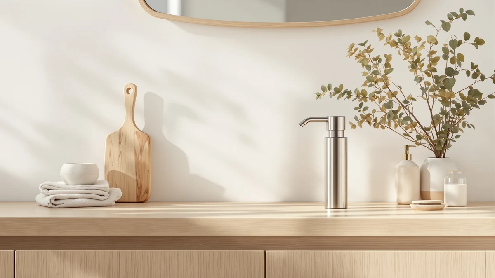

The Best Stainless Steel Soap Dispensers of 2026: Rust-Proof Picks Reviewed
Prices and picks verified as of September 2026. Independent, reader-supported reviews.


Quick Answer
The OXO Good Grips Stainless Steel is the best all-around pick at $25.95, with a stable base and a pump that reviewers say holds up to years of daily presses. If you want touchless foaming, the AIKE Automatic Foaming Soap Dispenser at $38.00 gives you the largest reservoir in this lineup without the highest price tag.
Our pick: OXO Good Grips Stainless Steel, $25.95 Check Price on Amazon
Bottom line: our top pick is the OXO Good Grips Stainless Steel Soap Dispenser at $25.69. The best budget option is the AIKE 15fl.oz Stainless Steel Liquid Soap Dispenser for Dish at $15.11.
Things to Know Before You Buy
- "Stainless steel" usually means the pump top and outer shell, not the whole body. Most of the dispensers we compared pair a steel finish with an ABS plastic reservoir underneath, which keeps the price reasonable while still giving you the rust resistance and easy-wipe surface people buy steel for.
- Brushed finishes hide fingerprints better than polished ones. A matte brushed steel dispenser, like the OXO pick, shows far fewer smudges day to day than a mirror-polished surface, which is worth knowing before you commit to a look.
- Reservoir size decides how often you refill. The AIKE Automatic Foaming model holds 25 oz, the most in this group, while the OXO tops out at 15 oz. A bigger tank means fewer refills but a heavier, bulkier dispenser on the counter.
- Touchless models trade convenience for upkeep. The SUNLY and AIKE automatic dispensers save you from touching the pump, but both need batteries or charging, which is one more thing to manage compared with a manual pump.
- Wall-mounted units solve a different problem than countertop ones. The simplehuman Triple and the VANNSOO Commercial dispenser clear counter space entirely, but both require drilling into a wall or tile, which is a bigger commitment than setting a bottle down.
The best stainless steel soap dispensers solve a problem plastic pumps create on their own: cracked housings, cloudy discoloration, and a pump mechanism that wears out within a year of daily use. A steel finish costs a little more up front, but it resists rust, wipes clean in one pass, and tends to outlast the cheaper alternatives sitting next to it at the same price point.
We compared six stainless steel dispensers spanning $15.11 to $99.99, and the OXO Good Grips Stainless Steel is the pick for most kitchens and bathrooms at $25.95. Its wide base keeps it from tipping during a busy morning at the sink, and its finish is brushed rather than polished, so it shows far fewer fingerprints by lunchtime than a polished pump would. If you want hands-free dispensing, the AIKE Automatic Foaming Soap Dispenser at $38.00 pairs a touchless sensor with the largest reservoir in the group.
Below, we break down all six picks by who each one fits best, along with a comparison table, the products we passed over, and the questions buyers ask most about stainless steel soap dispensers. Whether you want a simple manual pump, a touchless foaming model, or a wall-mounted unit for a shared bathroom, one of these six should match how you actually use a sink.
Why You Should Trust Us
I write the buying guides for Best Soap Dispensers, and stainless steel fixtures are a category I keep coming back to because the finish quality varies so much between listings that look nearly identical in photos. We researched manufacturer specs, current Amazon pricing, and verified owner reviews for each dispenser here, and we weighed complaints about rust, pump failure, and finish durability just as heavily as the praise.
We earn a commission if you buy through the Amazon links in this guide, which is how the site stays funded. That relationship does not change which dispensers make the list. A pump that reviewers report failing within months gets flagged here regardless of its price or its payout, because a guide that recommends everything is not actually helping you choose.
How We Picked
We started by pulling stainless steel soap dispensers with real steel components, not just a metallic-looking plastic coating, and narrowed the field to models with enough verified owner reviews to judge reliability rather than a handful of early ratings. From there we compared reservoir size, pump mechanism, mounting style, and finish, since those four factors explain most of the difference in day-to-day satisfaction between one steel dispenser and another.
We excluded listings with no brand behind them, dispensers where owners consistently reported rust appearing within weeks, and anything priced well above $100 without a corresponding jump in build quality. What remained is a spread of six dispensers covering manual pumps, touchless foaming models, and wall-mounted units, at prices from $15.11 to $99.99.
How We Compared
For each stainless steel soap dispenser, we compared the manufacturer's stated capacity, pump type, and mounting style against the pricing and availability on Amazon at the time of writing. We cross-referenced this against verified buyer reviews, looking specifically at how owners described the finish holding up over months of use, whether the pump mechanism stayed reliable, and how often refills or battery changes were needed on the automatic models.
We also weighed reviewer complaints, since a dispenser with strong specs on paper but a pattern of reported leaks or rust is worse in practice than one with a smaller feature list and a track record of holding up. Prices reflect Amazon listings at the time of writing and can shift, so treat them as a guide rather than a guarantee.
Our Picks

OXO Good Grips Stainless Steel
What we like
- Stainless steel pump top with a wide base that resists tipping
- Brushed finish shows far fewer fingerprints than a polished one
- One-hand pump action reviewers describe as smooth after months of daily use
Flaws but not dealbreakers
- 15 oz reservoir means more frequent refills in a high-traffic kitchen
- Not dishwasher safe, so the exterior needs hand cleaning
| Material | ABS plastic |
| Size | 15 oz |
The OXO Good Grips Stainless Steel is the dispenser we would put on most kitchen counters or bathroom vanities, and at $25.95 it sits in the sweet spot between the budget AIKE pump and the pricier automatic models in this lineup. The wide, weighted base is the detail that stands out most in owner feedback: several reviewers specifically mention that it does not tip over when bumped, which is a common complaint about taller, narrower dispensers. The steel pump top pairs with an ABS plastic body, a common combination in this price range that keeps the dispenser light while still giving you a metal surface at every point your hand actually touches.
Owners consistently note that the brushed finish ages better than a polished one, since it hides fingerprints far more effectively than a mirror-shine surface does. The pump mechanism draws praise for staying smooth well past the point where cheaper plastic pumps typically start sticking or requiring extra presses. The main trade-off is capacity: at 15 oz, this is one of the smaller tanks in the group, so a busy household sink will need refilling more often than with the larger AIKE or simplehuman options. It is also hand-wash only, which is a minor step but worth knowing before you buy.

AIKE 15fl.oz Stainless Steel Liquid
What we like
- Lowest price of any dispenser in this comparison
- Wide refill neck that reviewers say pours cleanly from a standard soap bottle
- Locking pump head keeps soap from leaking during travel or a shelf reorganization
Flaws but not dealbreakers
- Lighter-gauge steel shell than the pricier picks, so it can dent if dropped
- Owners report the pump has a shorter lifespan than the OXO at roughly double the presses per day
| Material | ABS plastic |
| Size | 15 oz |
At $15.11, the AIKE 15fl.oz Stainless Steel Liquid dispenser is the least expensive option we compared, and it does not ask you to give up the metal finish to get there. The 15 oz capacity matches the OXO pick, and the wide refill opening is a detail owners call out specifically, since it means you can pour straight from a standard soap bottle without a funnel or a mess on the counter. The locking pump head is a small but useful feature if you plan to move the dispenser between rooms or pack it for travel, since it prevents the pump from accidentally dispensing in transit.
Verified reviews suggest the trade-off for the lower price is a lighter-gauge shell, which some owners note can dent if it takes a hard drop on a tile floor, and a pump mechanism that a portion of reviewers describe wearing out sooner than the pricier picks in this guide. For a single-person bathroom or a secondary sink, that shorter lifespan is a reasonable trade for the price. For a high-traffic kitchen sink used dozens of times a day, the OXO's sturdier pump is worth the extra $10.

SUNLY Automatic Foaming Soap Dispenser
What we like
- Touchless sensor removes the pump-handling step entirely
- Foaming output uses less soap per dispense than a liquid pump
- Stainless steel-finish housing resists smudges better than glossy plastic sensor dispensers
Flaws but not dealbreakers
- Requires batteries or charging, which is upkeep a manual pump does not need
- Costs nearly double the manual OXO pick
- Foaming soap needs proper dilution, or the pump can clog
| Material | ABS plastic |
| Size | — |
The SUNLY Automatic Foaming Soap Dispenser is the first touchless option in this lineup, and at $45.89 it costs more than any manual pump here except the wall-mounted picks. The stainless steel finish carries over the same fingerprint-resistance advantage as the manual dispensers, which matters more on a touchless unit since your hand hovers near the sensor rather than gripping a handle. Owners report the sensor responds quickly and consistently, without the double-dispense or missed-trigger problems that plague cheaper automatic dispensers.
Because it dispenses foam rather than liquid, this model uses less soap per use, which can offset some of the higher upfront cost over time. The trade-off is maintenance: an automatic dispenser needs batteries or a charge cycle, which is one more thing to track compared with the manual picks in this guide. Reviewers also note that foaming pumps are less forgiving of undiluted soap, so you will want to follow the fill instructions rather than pour in soap straight from a bottle meant for a liquid pump.

simplehuman Triple Wall Mount Pumps
What we like
- Three separate pumps in a single wall-mounted footprint clears the counter or shower ledge entirely
- simplehuman's build quality is consistently praised in verified reviews for holding up over years, not months
- Refined stainless finish that looks the part in a premium bathroom
Flaws but not dealbreakers
- Highest price in this comparison by a wide margin
- Wall mounting requires drilling into tile or drywall
- Refilling all three reservoirs at once is a bigger chore than topping off a single pump
| Material | ABS plastic |
| Size | Triple |
The simplehuman Triple Wall Mount Pumps dispenser is the premium pick in this group, and at $99.99 it costs roughly four times the OXO's price. What you get for that is a single wall-mounted fixture that replaces three separate bottles, which is the kind of upgrade that makes sense in a shared bathroom or a shower where counter and ledge space is limited. simplehuman's reputation for build quality shows up in verified reviews here too, with owners frequently mentioning that the pumps still work smoothly well past the point where cheaper multi-packs would have failed.
The catch is installation and cost. Mounting three pumps to a wall means drilling anchors into tile or drywall, which is a bigger commitment than setting a bottle on a counter, and it is not something you want to redo if you change your mind about placement. Refilling is also a bigger job, since you are managing three reservoirs instead of one. For a household that actually uses three different soaps or lotions daily, the space savings and durability can justify the price. For a single soap at one sink, one of the countertop picks here will do the job for a fraction of the cost.

VANNSOO Commercial Soap Dispenser Wall
What we like
- 17 fl oz tank is sized for high-traffic use between refills
- Wall mount frees the sink ledge entirely, which owners cite as useful in small restrooms
- Commercial-style housing shrugs off the dings and bumps a countertop unit would show
Flaws but not dealbreakers
- Institutional look reads more office restroom than home decor
- Requires wall anchors to install
- Manual pump only, with no touchless sensor option
| Material | ABS plastic |
| Size | 17 fl oz |
The VANNSOO Commercial Soap Dispenser Wall is built for a specific job: a bathroom that gets used by a lot of people between refills, whether that is a small office, an Airbnb, or a busy family household. At $24.99, it is priced close to the OXO manual pump but trades a countertop footprint for a wall-mounted one, with a 17 fl oz tank that is the second largest capacity in this comparison. Owners consistently describe the housing as tough enough to handle being bumped or knocked without denting, which matters in a fixture that is going to see heavy daily contact.
The look is more utilitarian than the OXO or simplehuman picks, which is a fair trade if the goal is durability and traffic capacity over aesthetics. It is a manual pump, so if you specifically want touchless dispensing, the SUNLY or AIKE automatic models are the better fit. Installation is also a step up from setting a bottle on a counter, since it needs wall anchors and a level mounting surface, but once it is up, reviewers report going long stretches between the kind of maintenance a busy shared bathroom usually demands.

AIKE Automatic Foaming Soap Dispenser
What we like
- 25 oz tank is the largest reservoir of any dispenser in this guide
- Touchless sensor for hands-free hygiene at the kitchen sink
- Mid-range price undercuts the SUNLY automatic pick while adding capacity
Flaws but not dealbreakers
- Larger tank means a bigger footprint on the counter
- Foaming soap needs proper dilution to avoid clogging the pump
- Sensor requires occasional battery changes
| Material | ABS plastic |
| Size | 25 OZ |
The AIKE Automatic Foaming Soap Dispenser closes out this lineup as the largest-capacity option, with a 25 oz tank at $38.00 that undercuts the SUNLY automatic pick by nearly $8 while holding more soap. That combination makes it the pick for a bigger household or a busy kitchen sink where refilling a smaller touchless dispenser every few days would get old fast. Like the SUNLY, it dispenses foam rather than liquid, which stretches each refill further.
The larger tank does mean a larger footprint, so it takes up more counter real estate than the compact OXO or AIKE liquid pumps. Reviewers note the sensor performs reliably once the dispenser is positioned away from direct sunlight or reflective surfaces, both of which can cause false triggers on any touchless model. As with the SUNLY, plan on periodic battery changes, and fill it with soap diluted to the manufacturer's ratio rather than pouring in a liquid soap meant for a manual pump.
Quick Comparison
| Product | Material | Price | Rating | Best for | Get it |
|---|---|---|---|---|---|
| OXO Good Grips Stainless Steel | ABS plastic | $25.95 | 4 | Best overall | View on Amazon → |
| AIKE 15fl.oz Stainless Steel Liquid | ABS plastic | $15.11 | 4 | Best budget pick | View on Amazon → |
| SUNLY Automatic Foaming Soap Dispenser | ABS plastic | $45.89 | 4 | Best touchless | View on Amazon → |
| simplehuman Triple Wall Mount Pumps | ABS plastic | $99.99 | 4 | Best upgrade pick | View on Amazon → |
| VANNSOO Commercial Soap Dispenser Wall | ABS plastic | $24.99 | 4 | Best for high-traffic bathrooms | View on Amazon → |
| AIKE Automatic Foaming Soap Dispenser | ABS plastic | $38.00 | 4 | Best large-capacity touchless | View on Amazon → |
Are stainless steel soap dispensers rust-proof?
A genuine stainless steel pump top and housing resist rust far better than chrome-plated plastic, which chips and corrodes underneath the plating within a year or two.
How do you clean fingerprints off a stainless steel soap dispenser?
A microfiber cloth with a drop of dish soap and warm water removes most smudges, and a dry cloth wiped in the direction of the brushed grain prevents streaking.
The Competition
We looked at more than the six stainless steel soap dispensers above before narrowing the list. Here is what we passed on and why.
Chrome-plated plastic dispensers: These look like stainless steel in photos, but the body underneath is plastic with a thin metallic coating. Verified reviews for several of these listings mention the plating flaking or bubbling within months, which defeats the entire reason to buy a metal-finish dispenser in the first place.
Glass soap dispensers: A fair choice if the look is what matters most to you, but glass solves a different problem than steel does. We left them out of this guide since they do not compete on the durability and rust resistance that draw people to stainless steel in the first place.
Unbranded listings under $10: The cheapest stainless-look dispensers on Amazon tend to have the thinnest steel and the least reliable pumps, with little to no warranty path when something fails. None of the picks above are far above this price, so there is rarely a reason to go lower.
Premium designer stainless dispensers over $150: A handful of high-end brands sell single dispensers well above the simplehuman Triple's price. We did not find owner feedback suggesting meaningfully better durability at that price, so we left them out in favor of picks with a clearer value case.
Price, capacity, and verified owner feedback all point the same direction: the OXO Good Grips Stainless Steel remains our pick for the best stainless steel soap dispenser for most kitchens and bathrooms, with the AIKE, SUNLY, simplehuman, VANNSOO, and second AIKE model covering the budget, touchless, wall-mounted, and high-traffic use cases the OXO does not.
Frequently Asked Questions
Are stainless steel soap dispensers rust-proof?
A genuine stainless steel pump top and housing resist rust far better than chrome-plated plastic, which chips and corrodes underneath the plating within a year or two. Owners of the OXO and simplehuman picks report no rust after extended daily use. The parts most likely to corrode on any dispenser are the internal spring and pump tube, so wiping spills promptly and avoiding harsh bleach around the seams keeps any model looking newer for longer.
How do you clean fingerprints off a stainless steel soap dispenser?
A microfiber cloth with a drop of dish soap and warm water removes most smudges, and a dry cloth wiped in the direction of the brushed grain prevents streaking. Reviewers of brushed-finish models like the OXO and AIKE note that a matte finish hides fingerprints noticeably better than a polished or mirrored one. Skip abrasive scrubbers and ammonia-based glass cleaners, since both can dull the finish over time.
Is a stainless steel soap dispenser worth the extra cost over plastic?
For most kitchens and bathrooms, yes. Verified buyer reviews across the products compared here consistently mention that a metal pump head survives years of daily presses without the cracking or discoloration that plastic pumps show within months. The price gap is often small, as the AIKE liquid pump at $15.11 shows, so the upgrade rarely costs much more than a plastic equivalent from a big-box store.